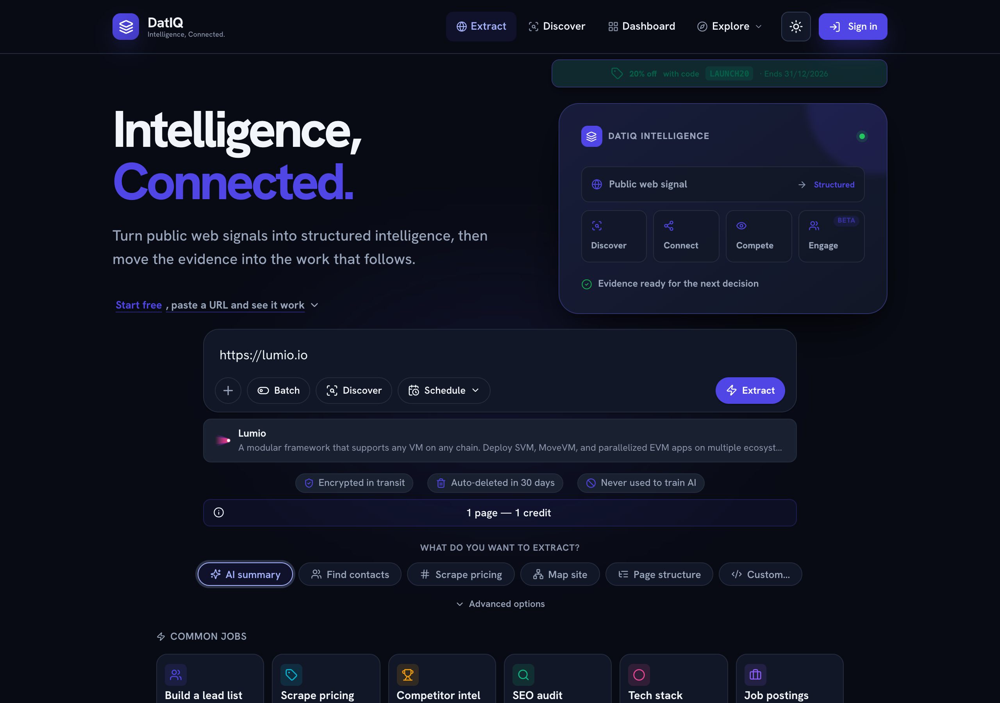

What DatIQ is
DatIQ is The Unified Web Intelligence Platform — a zero-code web-extraction and enrichment platform
DatIQ is The Unified Web Intelligence Platform — a zero-code web-extraction and enrichment platform organised as a stack of named pillars. Its foundation, Pillar 0 — Web Intelligence (Core), is the proven single, batch, and scheduled URL-extraction engine that the rest of the platform is built on. Its promise is simple: Intelligence from Web. Give it a web address and it returns clean, structured information you can read, filter, enrich, export, or monitor over time.
Typical things people pull out of a page:
- Structure — the full heading outline (H1–H6) and every link, internal and external, de-duplicated.
- An AI summary — a short, plain-language overview of what the page is about.
- Contacts — leadership names, role titles, and contact emails where a page exposes them.
- Pricing — structured pricing tiers and plan details from a pricing page.
- A site map — the set of indexed URLs across a whole domain.
- Anything else — describe a field in plain English ("founding year", "office locations") and DatIQ extracts it.
DatIQ works in light and dark themes; use the sun/moon button in the top bar to switch. Your preference is remembered.
The pillars
DatIQ is organised as a stack of named pillars. Pillar 0 is the foundation; everything else is layered on top of it.
| Pillar | Name | What it is |
|---|---|---|
| P0 | Web Intelligence (Core) | The single, batch, and scheduled URL-extraction engine — proven, ships today. |
| P1 | Enrichment & Insight | AI summaries, contact enrichment, content generation (SEO briefs, competitor briefs). |
| P2 | Distribution & Workflow | CSV / PDF / Google Sheets export, scheduling, webhook push, CRM sync. |
| P3 | Workspace & Collaboration | (roadmap) shared workspaces, role-based access, team controls. |
| P4 | Intelligence Mesh (API) | (roadmap) REST + webhook API and native integrations. |
Pillar 0 is what runs the moment you click Extract on the Home screen, the moment you submit
a list on Batch, and the moment a Schedule fires. It is the engine; the rest of DatIQ is
everything you can do once the engine has the data.
